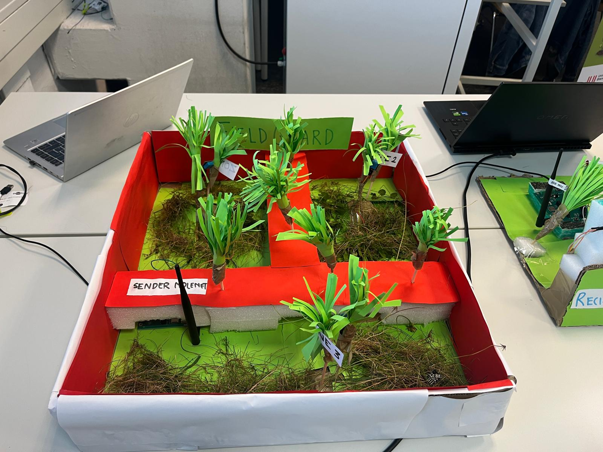
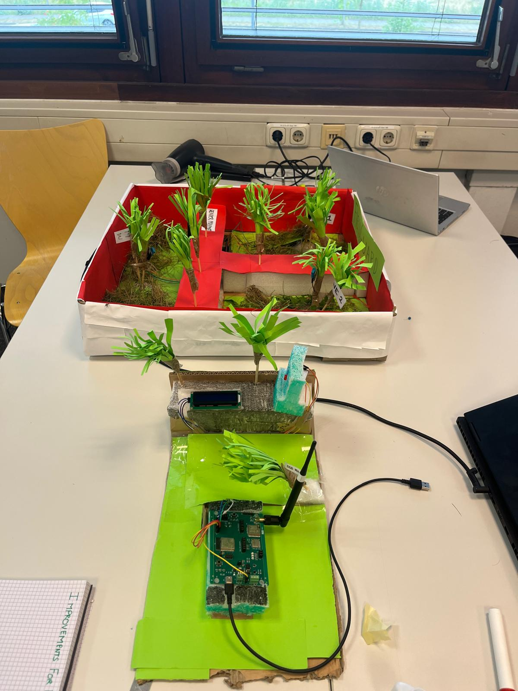
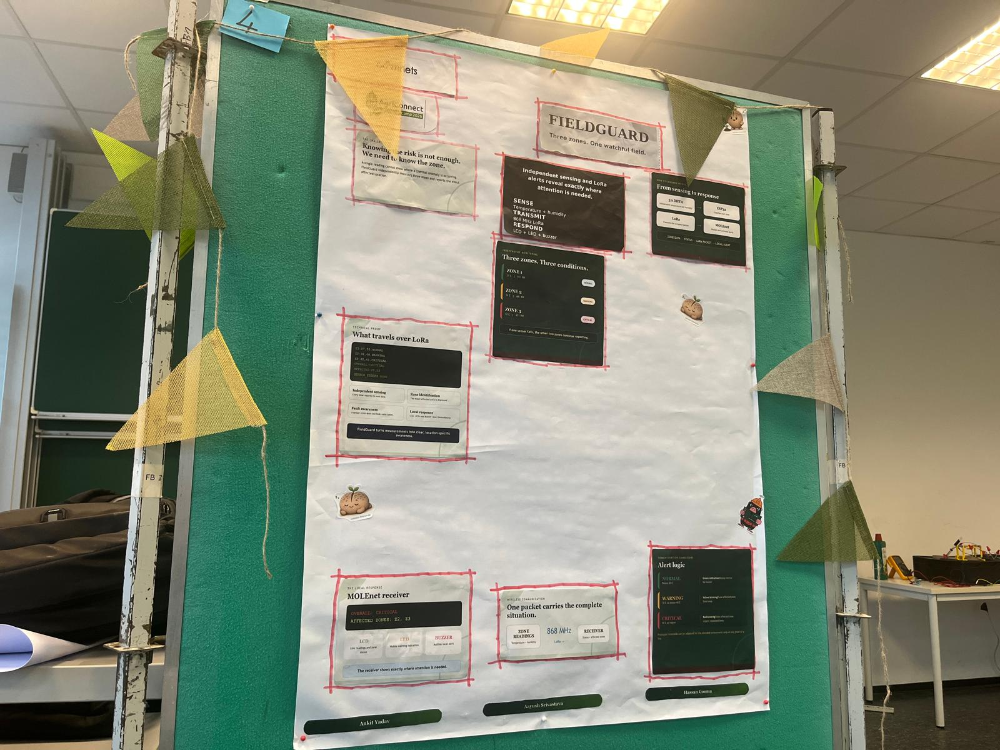
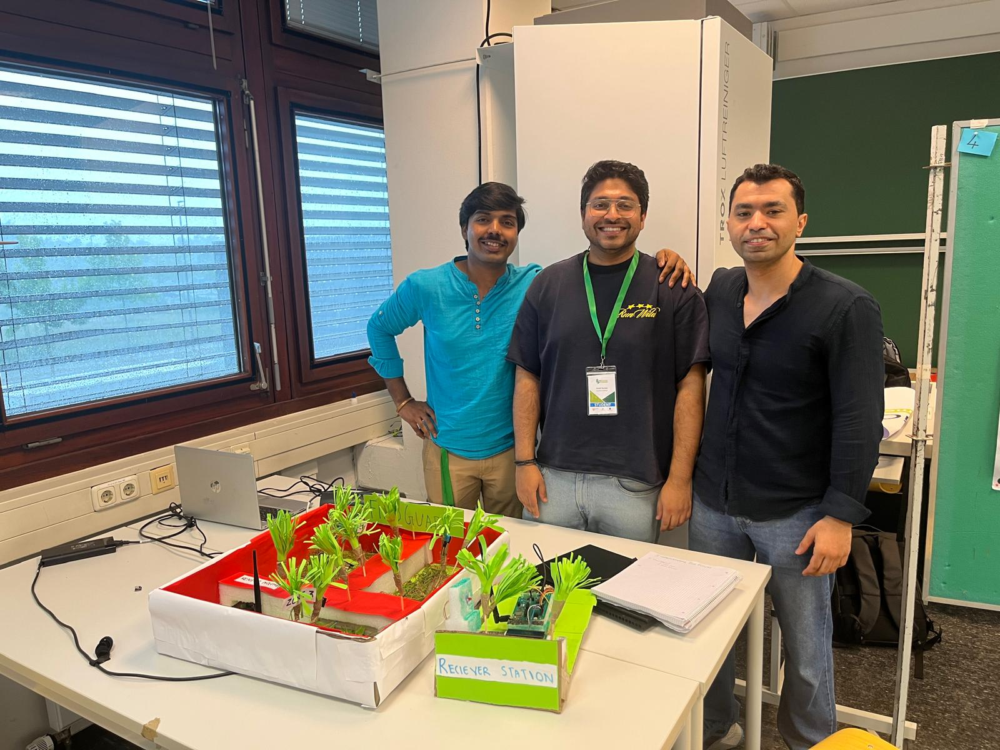

ZONE 01
● ONLINE
22°C
NORMAL
AGRITECH IoT / DISTRIBUTED ENVIRONMENTAL MONITORING
FieldGuard is a student-built proof-of-concept for distributed environmental monitoring using ESP32-based sensing and long-range LoRa communication.

Student engineering prototype · Team Alpha
01 / THE PROBLEM
Environmental conditions can vary between different areas of a field, greenhouse or agricultural environment.
A single measurement cannot describe every location. FieldGuard explores a distributed approach in which independent sensing zones report their environmental conditions to a central receiver.
LoRa communication allows the concept to operate without depending on conventional Wi-Fi infrastructure between the sensing and receiving units.
02 / LIVE FIELD SIMULATION
This browser simulation demonstrates the temperature-based alert logic used in the FieldGuard prototype. Adjust each zone independently.
Attention required in Zone 3.
03 / SYSTEM ARCHITECTURE
FieldGuard connects sensing, embedded processing, long-range wireless communication and local alerts into one prototype system.
Independent temperature and humidity sensing across three monitored zones.
Sensor readings are processed and associated with their respective monitoring zone.
Wireless communication at 868 MHz transfers the monitored information to the receiver.
LCD, LED and buzzer feedback communicate the current condition and affected zone.
04 / POTENTIAL APPLICATIONS
FieldGuard demonstrates temperature and humidity monitoring. The underlying distributed architecture could be adapted to different agricultural environments and additional sensors.
Monitor separate growing zones and identify localized environmental changes.
Explore long-range environmental sensing in areas where conventional Wi-Fi may be impractical.
Extend distributed environmental awareness across separated livestock or barn areas.
Adapt the sensing concept to monitor environmental conditions in agricultural storage spaces.
05 / ENGINEERING
Three physical sensor zones allow the prototype to distinguish environmental conditions by location.
ESP32-based hardware connects sensor acquisition, zone logic and wireless communication.
SX127x LoRa modules provide the wireless link between the sensing system and receiver.
The prototype categorizes temperature conditions as Normal, Warning or Critical and communicates the affected zone.

06 / THE PROTOTYPE
From the physical sensing setup to the final presentation, FieldGuard was developed as a hands-on student engineering prototype by Team Alpha.


07 / PROJECT ORIGIN
FieldGuard was developed during the IoT Summer Camp Bremen 2026 as a student proof-of-concept for distributed agricultural environmental monitoring.
The project combined environmental sensing, embedded systems, LoRa communication and condition-based alerts in one working prototype.
FIELDGUARD / AGRITECH IoT
A student-built exploration of sensing, long-range communication and distributed environmental awareness.
Back to Top ↑